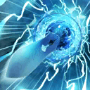
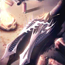
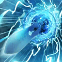
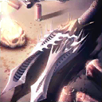

-
- ★☆★
- 引用本站的翻譯請註明本站名稱或網址
本站不像其他網站可以分工合作統整資料
而是獨自一人憑藉熱忱製作分享
引用本站的翻譯請註明本站名稱或網址
-
- ★☆★
- 本週Master任務(10/2 23:00～10/9 22:59)
任務 獎勵 No.1：通過這週全部的Master任務 
No.2：擊倒10位持有『善』屬性的Servant No.3：擊倒10位持有『混沌』屬性的Servant No.4：擊倒10位持有『秩序』屬性的Servant No.5：擊倒5位持有『羅馬』屬性的Servant No.6：擊倒5位持有『神性』屬性的Servant No.7：擊倒15位Servant
- 7/6
- 【重要】Ver.1.11.0以後，關於從推薦環境以外的遊玩
- 9/26
- 關於「瑪琇・基利艾拉特」角色配音(CV)擔任的變更
- 9/28
- 期間限定活動「尼祿祭再臨 ～2016 Autumn～」
「700萬DL突破宣傳活動」＆「Servant強化關卡 第5彈」
「700萬DL突破宣傳活動」＆「Servant強化關卡 第5彈」


◆Servant◆
・新增技能解放

 10/7追加→
10/7追加→

・絆等級上限變更至Lv.10


◆概念禮裝◆
・絆等級上限變更至Lv.10
・新增概念禮裝


  ←10/5追加↓
・不撓不屈
・たった一人の戦争
・聖なる泉
・不滅なる刃
・隠された女神
・文明の灯火
・技量、神域に達する
・騎士の誓い
・エレメンタル
・真・階差機関
  ←10/5追加↓
・不撓不屈
・たった一人の戦争
・聖なる泉
・不滅なる刃
・隠された女神
・文明の灯火
・技量、神域に達する
・騎士の誓い
・エレメンタル
・真・階差機関
| 官方推特 |